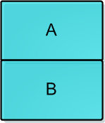

好的习惯可以影响人一生
概述
在一开始的学习java的时候，一直认为JMM（Java Memory Model）和Java内存区域是一个东西。后面深入学习后，Java内存区域是JVM在运行程序时会把其自动管理的内存划分为以上几个区域，每个区域都有的用途以及创建销毁的时机。JMM则是本身是一种抽象的概念，并不真实存在，它描述的是一组规则或规范，通过这组规范定义了程序中各个变量（包括实例字段，静态字段和构成数组对象的元素）的访问方式。
JMM(Java Memory Model)
Java内存区域就不在过多的介绍，有兴趣可以看我以前写的关于深入理解JVM的内容。
在执行程序时JVM运行程序的实体是线程，而每个线程创建时JVM都会为其创建一个工作内存(有些地方称为栈空间)，用于存储线程私有的数据，而Java内存模型中规定所有变量都存储在主内存，主内存是共享内存区域，所有线程都可以访问，但线程对变量的操作(读取赋值等)必须在工作内存中进行，首先要将变量从主内存拷贝的自己的工作内存空间，然后对变量进行操作，操作完成后再将变量写回主内存，不能直接操作主内存中的变量，工作内存中存储着主内存中的变量副本拷贝，前面说过，工作内存是每个线程的私有数据区域，因此不同的线程间无法访问对方的工作内存，线程间的通信(传值)必须通过主内存来完成，其简要访问过程如下图:
JMM与Java内存区域的划分是不同的概念层次，更恰当说JMM描述的是一组规则，通过这组规则控制程序中各个变量在共享数据区域和私有数据区域的访问方式，JMM是围绕原子性，有序性、可见性展开的。这也是我们在并发操作，或者使用多线程执行的时候围绕这三个原则来保证数据的同步。
对于一个实例对象中的成员方法而言，如果方法中包含本地变量是基本数据类型（boolean,byte,short,char,int,long,float,double），将直接存储在工作内存的帧栈结构中，但倘若本地变量是引用类型，那么该变量的引用会存储在功能内存的帧栈中，而对象实例将存储在主内存(共享数据区域，堆)中。但对于实例对象的成员变量，不管它是基本数据类型或者包装类型(Integer、Double等)还是引用类型，都会被存储到堆区。至于static变量以及类本身相关信息将会存储在主内存中。需要注意的是，在主内存中的实例对象可以被多线程共享，倘若两个线程同时调用了同一个对象的同一个方法，那么两条线程会将要操作的数据拷贝一份到自己的工作内存中，执行完成操作后才刷新到主内存，
总结来说一句话：方法中的局部变量是基本类型就直接操作个线程的栈中，引用变量值存在主内存中。而对象成员变量都存放在主内存中。
为什么需要JMM，它试图解决什么问题
Java 是最早尝试提供内存模型的语言，这是简化多线程编程、保证程序可移植性的一个飞跃。早期类似 C、C++ 等语言，并不存在内存模型的概念（C++ 11 中也引入了标准内存模型），其行为依赖于处理器本身的内存一致性模型，但不同的处理器可能差异很大，所以一段 C++ 程序在处理器 A 上运行正常，并不能保证其在处理器 B 上也是一致的。
即使如此，最初的 Java 语言规范仍然是存在着缺陷的，当时的目标是，希望 Java 程序可以充分利用现代硬件的计算能力，同时保持“书写一次，到处执行”的能力。
但是，显然问题的复杂度被低估了，随着 Java 被运行在越来越多的平台上，人们发现，过于泛泛的内存模型定义，存在很多模棱两可之处，对 synchronized 或 volatile 等，类似指令重排序时的行为，并没有提供清晰规范。这里说的指令重排序，既可以是编译器优化行为，也可能是源自于现代处理器的乱序执行等。
换句话说：
既不能保证一些多线程程序的正确性，例如最著名的就是双检锁（Double-Checked Locking，DCL）的失效问题，双检锁可能导致未完整初始化的对象被访问，理论上这叫并发编程中的安全发布（Safe Publication）失败。
也不能保证同一段程序在不同的处理器架构上表现一致，例如有的处理器支持缓存一致性，有的不支持，各自都有自己的内存排序模型。
所以，Java 迫切需要一个完善的 JMM，能够让普通 Java 开发者和编译器、JVM 工程师，能够清晰地达成共识。换句话说，可以相对简单并准确地判断出，多线程程序什么样的执行序列是符合规范的。
volatile和synchronized
volatile在并发编程中很常见，但也容易被滥用，现在我们就进一步分析volatile关键字的语义。volatile是Java虚拟机提供的轻量级的同步机制。volatile关键字有如下两个作用
- 保证被volatile修饰的共享变量对所有线程总数可见的，也就是当一个线程修改了一个被volatile修饰共享变量的值，新值总数可以被其他线程立即得知。
- 禁止指令重排序优化。
volatile和synchronized特点
首先需要理解线程安全的两个方面：执行控制和内存可见。执行控制的目的是控制代码执行（顺序）及是否可以并发执行。内存可见控制的是线程执行结果在内存中对其它线程的可见性。根据Java内存模型的实现，线程在具体执行时，会先拷贝主存数据到线程本地（CPU缓存），操作完成后再把结果从线程本地刷到主存。
synchronized关键字解决的是执行控制的问题，它会阻止其它线程获取当前对象的监控锁，这样就使得当前对象中被synchronized关键字保护的代码块无法被其它线程访问，也就无法并发执行。更重要的是，synchronized还会创建一个内存屏障，内存屏障指令保证了所有CPU操作结果都会直接刷到主存中，从而保证了操作的内存可见性，同时也使得先获得这个锁的线程的所有操作，都happens-before于随后获得这个锁的线程的操作。
volatile关键字解决的是内存可见性的问题，会使得所有对volatile变量的读写都会直接刷到主存，即保证了变量的可见性。这样就能满足一些对变量可见性有要求而对读取顺序没有要求的需求。
使用volatile关键字仅能实现对原始变量(如boolen、 short 、int 、long等)操作的原子性，但需要特别注意， volatile不能保证复合操作的原子性，即使只是i++，实际上也是由多个原子操作组成：read i; inc; write i，假如多个线程同时执行i++，volatile只能保证他们操作的i是同一块内存，但依然可能出现写入脏数据的情况。
在Java 5提供了原子数据类型atomic wrapper classes，对它们的increase之类的操作都是原子操作，不需要使用sychronized关键字。
对于volatile关键字，当且仅当满足以下所有条件时可使用：
- 对变量的写入操作不依赖变量的当前值，或者你能确保只有单个线程更新变量的值。
- 该变量没有包含在具有其他变量的不变式中。
volatile和synchronized的区别
volatile本质是在告诉jvm当前变量在寄存器（工作内存）中的值是不确定的，需要从主存中读取； synchronized则是锁定当前变量，只有当前线程可以访问该变量，其他线程被阻塞住。
volatile仅能使用在变量级别；synchronized则可以使用在变量、方法、和类级别的
volatile仅能实现变量的修改可见性，不能保证原子性；而synchronized则可以保证变量的修改可见性和原子性
volatile不会造成线程的阻塞；synchronized可能会造成线程的阻塞。
volatile标记的变量不会被编译器优化；synchronized标记的变量可以被编译器优化
volatile和Atomic
volatile
锁（lock）的代价
锁是用来做并发最简单的方式，当然其代价也是最高的。内核态的锁的时候需要操作系统进行一次上下文切换，加锁、释放锁会导致比较多的上下文切换和调度延时，等待锁的线程会被挂起直至锁释放。在上下文切换的时候，cpu之前缓存的指令和数据都将失效，对性能有很大的损失。 操作系统对多线程的锁进行判断就像两姐妹在为一个玩具在争吵，然后操作系统就是能决定他们谁能拿到玩具的父母，这是很慢的。用户态的锁虽然避免了这些问题，但是其实它们只是在没有真实的竞争时才有效。
Java在JDK1.5之前都是靠synchronized关键字保证同步的，这种通过使用一致的锁定协议来协调对共享状态的访问，可以确保无论哪个线程持有守护变量的锁，都采用独占的方式来访问这些变量，如果出现多个线程同时访问锁，那第一些线线程将被挂起，当线程恢复执行时，必须等待其它线程执行完他们的时间片以后才能被调度执行，在挂起和恢复执行过程中存在着很大的开销。锁还存在着其它一些缺点，当一个线程正在等待锁时，它不能做任何事。如果一个线程在持有锁的情况下被延迟执行，那么所有需要这个锁的线程都无法执行下去。 如果被阻塞的线程优先级高，而持有锁的线程优先级低，将会导致优先级反转(Priority Inversion)。
与锁相比，volatile变量是一和更轻量级的同步机制，因为在使用这些变量时不会发生上下文切换和线程调度等操作，但是volatile变量也存在一些局限：不能用于构建原子的复合操作，因此当一个变量依赖旧值时就不能使用volatile变量。
volatile使用准则
volatile的使用是非常容易出错的，在介绍volatile之前先说两个准则，只要我们的程序能遵循它，咱就可以放心使用volatile变量来实现线程安全。
- 对变量的写操作不依赖于当前值。
- 该变量没有包含在具有其他变量的不变式中。
是不是有些头大，其实就是volatile修饰的变量独立于程序的任何状态，包括自己当前的状态。只有在其状态完全独立于程序其他状态时才可使用volatile变量。
注意：重申一下使用volatile变量的正确条件 –
volatile变量必须真正独立于其他变量和其以前的值。还有并发专家也同时告诫我们：尽量远离volatile变量，除非你真正的理解其涵义和使用场景。
不要将volatile用在getAndOperate场合，仅仅set或者get的场景是适合volatile的
例如你让一个volatile的integer自增（i++），其实要分成3步：1）读取volatile变量值到local； 2）增加变量的值；3）把local的值写回，让其它的线程可见。这3步的jvm指令为：
1 | mov 0xc(%r10),%r8d ; Load |
注意最后一步是内存屏障。
什么是内存屏障（Memory Barrier）？
内存屏障（memory barrier）是一个CPU指令。基本上，它是这样一条指令：
- a) 确保一些特定操作执行的顺序；
- b) 影响一些数据的可见性(可能是某些指令执行后的结果)。
编译器和CPU可以在保证输出结果一样的情况下对指令重排序，使性能得到优化。插入一个内存屏障，相当于告诉CPU和编译器先于这个命令的必须先执行，后于这个命令的必须后执行。内存屏障另一个作用是强制更新一次不同CPU的缓存。例如，一个写屏障会把这个屏障前写入的数据刷新到缓存，这样任何试图读取该数据的线程将得到最新值，而不用考虑到底是被哪个cpu核心或者哪颗CPU执行的。
内存屏障（memory barrier）和volatile什么关系？上面的虚拟机指令里面有提到，如果你的字段是volatile，Java内存模型将在写操作后插入一个写屏障指令，在读操作前插入一个读屏障指令。这意味着如果你对一个volatile字段进行写操作，你必须知道：
1、一旦你完成写入，任何访问这个字段的线程将会得到最新的值。
2、在你写入前，会保证所有之前发生的事已经发生，并且任何更新过的数据值也是可见的，因为内存屏障会把之前的写入值都刷新到缓存。
volatile为什么没有原子性?
明白了内存屏障（memory barrier）这个CPU指令，回到前面的JVM指令：从Load到store到内存屏障，一共4步，其中最后一步jvm让这个最新的变量的值在所有线程可见，也就是最后一步让所有的CPU内核都获得了最新的值，但中间的几步（从Load到Store）是不安全的，中间如果其他的CPU修改了值将会丢失。所以volatile无法保证在内存屏障前的操作，有可能会发生修改。下面的测试代码可以实际测试voaltile的自增没有原子性：
1 | private static volatile long _longVal = 0; |
为什么AtomicXXX具有原子性和可见性？
那就不得不提CAS（比较并交换）算法。 其实AtomicLong的源码里也用到了volatile，但只是用来读取或写入，见源码：
1 | public class AtomicInteger extends Number implements java.io.Serializable { |
其CAS虚拟机指令为：
1 | mov 0xc(%r11),%eax ; Load |
因为CAS是基于乐观锁的，也就是说当写入的时候，如果寄存器旧值已经不等于现值，说明有其他CPU在修改，那就继续尝试。所以这就保证了操作的原子性。
那CAS是什么？为什么能够保证操作的原子性？为什么比volatile更好？
CAS无锁算法
要实现无锁（lock-free）的非阻塞算法有多种实现方法，其中CAS（比较与交换，Compare and swap）是一种有名的无锁算法。CAS, CPU指令，在大多数处理器架构，包括IA32、Space中采用的都是CAS指令，CAS的语义是“我认为V的值应该为A，如果是，那么将V的值更新为B，否则不修改并告诉V的值实际为多少”，CAS是项乐观锁技术，当多个线程尝试使用CAS同时更新同一个变量时，只有其中一个线程能更新变量的值，而其它线程都失败，失败的线程并不会被挂起，而是被告知这次竞争中失败，并可以再次尝试。
CAS有3个操作数，内存值V，旧的预期值A，要修改的新值B。当且仅当预期值A和内存值V相同时，将内存值V修改为B，否则什么都不做。CAS无锁算法的C实现如下：
1 | int compare_and_swap (int* reg, int oldval, int newval) |
CAS（乐观锁算法）的假设前提
CAS比较与交换的伪代码可以表示为：
do{
备份旧数据；
基于旧数据构造新数据；
}while(!CAS( 内存地址，备份的旧数据，新数据 ))
（上图的解释：CPU去更新一个值，但如果想改的值不再是原来的值，操作就失败，因为很明显，有其它操作先改变了这个值。）
就是指当两者进行比较时，如果相等，则证明共享数据没有被修改，替换成新值，然后继续往下运行；如果不相等，说明共享数据已经被修改，放弃已经所做的操作，然后重新执行刚才的操作。容易看出 CAS 操作是基于共享数据不会被修改的假设，采用了类似于数据库的 commit-retry 的模式。当同步冲突出现的机会很少时，这种假设能带来较大的性能提升。
CAS的问题
CAS并不是完全没有缺陷的，其中一个就是著名的ABA问题，这是通常只在 lock-free 算法下暴露的问题。
CAS算法实现一个重要前提需要取出内存中某时刻的数据，而在下时刻比较并替换，那么在这个时间差类会导致数据的变化。
比如说一个线程one从内存位置V中取出A，这时候另一个线程two也从内存中取出A，并且two进行了一些操作变成了B，然后two又将V位置的数据变成A，这时候线程one进行CAS操作发现内存中仍然是A，然后one操作成功。尽管线程one的CAS操作成功，但是不代表这个过程就是没有问题的。
比如如果链表的头在变化了两次后恢复了原值，但是不代表链表就没有变化。因此前面提到的原子操作
AtomicStampedReference/AtomicMarkableReference就很有用了。这允许一对变化的元素进行原子操作。
在运用CAS做Lock-Free操作中有一个经典的ABA问题：
线程1准备用CAS将变量的值由A替换为B，在此之前，线程2将变量的值由A替换为C，又由C替换为A，然后线程1执行CAS时发现变量的值仍然为A，所以CAS成功。但实际上这时的现场已经和最初不同了，尽管CAS成功，但可能存在潜藏的问题，例如下面的例子：

现有一个用单向链表实现的堆栈，栈顶为A，这时线程T1已经知道A.next为B，然后希望用CAS将栈顶替换为B：
head.compareAndSet(A,B);
在T1执行上面这条指令之前，线程T2介入，将A、B出栈，再pushD、C、A，此时堆栈结构如下图，而对象B此时处于游离状态：

此时轮到线程T1执行CAS操作，检测发现栈顶仍为A，所以CAS成功，栈顶变为B，但实际上B.next为null，所以此时的情况变为：

其中堆栈中只有B一个元素，C和D组成的链表不再存在于堆栈中，平白无故就把C、D丢掉了。
以上就是由于ABA问题带来的隐患，各种乐观锁的实现中通常都会用版本戳version来对记录或对象标记，避免并发操作带来的问题.
高并发环境下优化锁或无锁（lock-free）的设计思路
服务端编程的3大性能杀手：1、大量线程导致的线程切换开销。2、锁(锁的代价：内核态上下文切换，大量缓存的数据会失效，挂起和恢复线程消耗大量资源，阻塞线程，CPU利用率不高)。3、非必要的内存拷贝。在高并发下,对于纯内存操作来说,单线程是要比多线程快的, 可以比较一下多线程程序在压力测试下cpu的sy和ni百分比。
高并发环境下要实现高吞吐量和线程安全，两个思路：一个是用优化的锁实现，一个是lock-free的无锁结构。但非阻塞算法要比基于锁的算法复杂得多。开发非阻塞算法是相当专业的训练，而且要证明算法的正确也极为困难，不仅和具体的目标机器平台和编译器相关，而且需要复杂的技巧和严格的测试。虽然Lock-Free编程非常困难，但是它通常可以带来比基于锁编程更高的吞吐量。所以Lock-Free编程是大有前途的技术。它在线程中止、优先级倒置以及信号安全等方面都有着良好的表现。
- 优化锁实现的例子：Java中的
ConcurrentHashMap，设计巧妙，用桶粒度的锁和锁分离机制，避免了put和get中对整个map的锁定，尤其在get中，只对一个HashEntry做锁定操作，性能提升是显而易见的（详细分析见：《探索 ConcurrentHashMap 高并发性的实现机制》 ）。- Lock-free无锁的例子：CAS（CPU的
Compare-And-Swap指令）的利用和LMAX的disruptor无锁消息队列数据结构等。
结语
volatile无法保证原则性。可以使用并发包提供的Atomic* 。